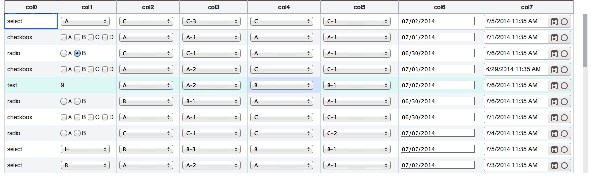

Keyboard
Cell 간 이동을 하는 Navigation Mode 와 Cell 의 데이타 및 Widget 을 조작하는 Actionable Mode 로 크게 나뉜다.
Navigation Mode
-
Right/Left Arrow Key
Column 이동. 행 바꿈은 없다. -
Up/Down Arrow Key
Row 이동. 열 바꿈은 없다. -
Home Key
현재 Row 의 첫 번째 Cell 로 이동. -
End Key
현재 Row 의 마지막 Cell 로 이동. -
Page Up Key
현재 Column 의 첫 번째 Cell 로 이동. -
Page Down Key
현재 Column 의 마지막 Cell 로 이동.
직접 해보세요! 01
키보드를 이용하여 fixed Column 사이를 오가며 원하는 Cell 로 이동할 수 있다.
See the Pen W5Grid - 04 Frozen Column by w5 (@w5) on CodePen.
Actionable Mode
Tab Key
- 다음 Actionable Item 으로 이동.
- Actionable Item 은 Focus 가 되고 편집 상태로 전환되거나 조작할 수 있는 Element 를 의미한다.
- 이동과 함께 Actionable Mode 로 전환된다.
- DisplayType 이
text인 경우 편집 상태로 전환된다. - Cell 안에 Widget 이 존재하는 경우 해당 Widget 이 포커스된다.
- First Child 를 기준으로 포커스된다.
- Custome Cell 이면서 First Child 가 Tabbable Object 가 아닌 경우, Column Model Object 의
focusSelector속성에 포커스될 객체에 접근하기 위한 Selector 를 지정할 수 있다.
- DisplayType 이
- Cell 안에 Tabbable Object(checkbox)이 있는 경우, Tab 을 이용하여 (checkbox) Items 간 이동한다.
- 마지막 Tabbable Item 에서는 다음 Cell 로 이동한다.
- 마지막 컬럼에서는 줄바꿈이 발생하여 다음 Row 의 첫 번째 컬럼으로 이동한다.
- Shift + Tab 은 Tab 과 반대 방향으로 동작한다.
focusSelector
- Widget 구조
<td>
<span class="widget datetimepicker">
<span class="picker-wrap">
<input type="text" data-role="datetimepicker" class="input">
</span>
</span>
</td>
- focusSelector 지정
grid1 = new w5.Grid( {
생략...
colModel: [{
displayType: "custom",
template = "<input type='text'/>",
focusSelector = "input"
}]
});
Enter, F2 Key
Actionable Mode 로 전환된다.
Escape Key
Actionable Mode 를 빠져나와서 Navigation Mode 로 전환된다.
Example
- checkbox
- Native 동작과 동일하게 Tab / Shift + Tab 으로 아이템 간 이동이 가능하다.
- selectbox
- Native 동작과 동일하게 위 / 아래 화살표 key 로 아이템 간 이동이 가능하다.
- radio
- Native 동작과 동일하게 좌 / 우 ( 위 / 아래 ) 화살표 key 로 아이템 간 이동이 가능하다.
- custom
- 3rd party widget 으로 삽입된 jQuery UI 와 Kendo UI datepicker 중, Kendo UI 는 alt(option) + 아래 화살표를 이용해서 달력 팝업을 열 수 있다.

직접 해보세요! 02
See the Pen W5Grid - 05 DisplayType by w5 (@w5) on CodePen.